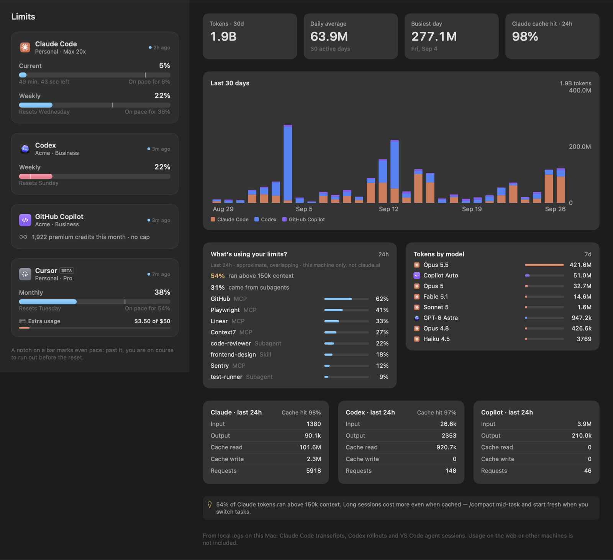
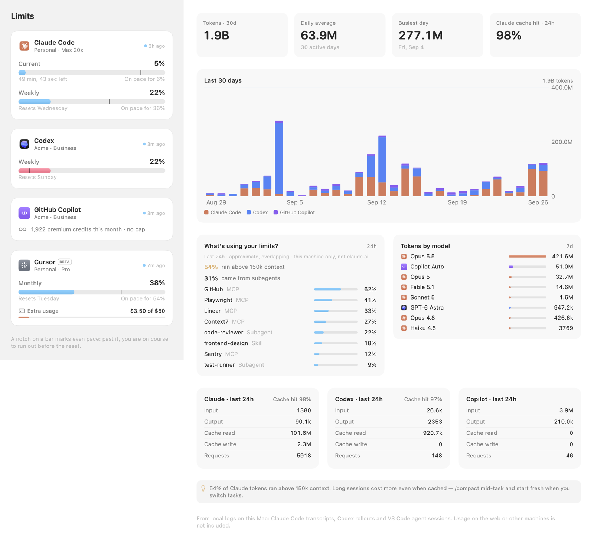
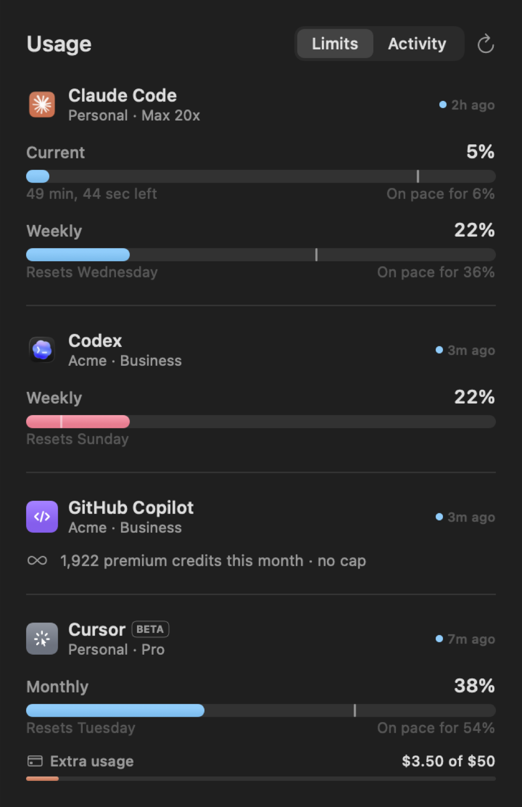
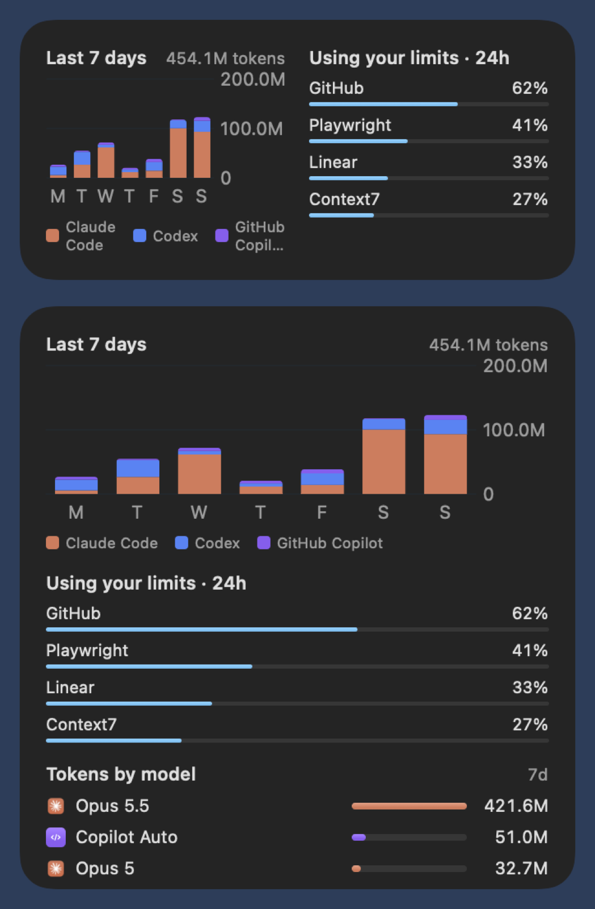

Every AI coding limit, on one meter.
TokenMeter shows how much of your Claude Code, Codex, GitHub Copilot and Cursor plans you have left, whether you're on pace to run out before the reset, and what's actually spending your tokens.



Not another percentage.
A number that says 60% means nothing without time. TokenMeter reads each window's length and reset, so it can tell you whether 60% is fine or a problem.
Pace, not just percent
A notch marks even pace on every bar. Past it, the bar turns amber, and a flame appears in the menu bar when you're on course to run out before the reset.
Where the tokens went
30 days of tokens per vendor from local logs, split into input, output and cache, plus which MCP servers, skills and subagents were running while your limit dropped.
Menu bar, desktop, widgets
A glanceable popover, a full dashboard window, and WidgetKit widgets that stay readable on any wallpaper, even when macOS strips their colour.
Alerts that mean something
One notification at 80% and one at 95% per window, plus an "all clear" when a window you were pushing against resets.
Inside Claude Code
A plugin with /usage, weekly reports and a limit-aware planning skill, so Claude sizes big tasks to the headroom you actually have.
macOS and Windows
A native SwiftUI app on the Mac, and a tray app with a desktop widget on Windows. Both read and write the same documented board file.
Same 60%. Different story.
Drag the slider to see the same usage at different points in a five-hour window. The colour follows the projection at reset, not the raw number.
Cyan: on track · Amber: projected past 100% · Red: projected past 130%, or 90% already used.
Five lanes, honestly sourced.
Each lane reads from where that vendor already keeps its data. Lanes whose source couldn't be checked against a real account are marked beta, and TokenMeter won't show a number it can't justify.
| Lane | Limits from | Activity from |
|---|---|---|
| Claude Code | The status line feed, plus Anthropic's usage endpoint using Claude Code's own sign-in: 5-hour, weekly and per-model windows, and extra spend. | Transcripts in ~/.claude/projects, deduplicated per message. |
| Codex | The rate_limits Codex records after every turn. | Token counts in Codex session rollouts. |
| GitHub Copilot | The premium-request allowance, requested through the gh CLI's sign-in. Seats without a cap show credits used. | VS Code agent-mode chat sessions. |
| CursorBETA | Cursor's monthly usage pool and on-demand spend, using Cursor's local sign-in. | None |
| GrokBETA | The SuperGrok credit pool the grok CLI reports for /usage. | None |
| Microsoft 365 Copilot | No lane. Microsoft exposes Copilot usage only to tenant admins, with no per-person limit to show. | |
Reads. Never writes.
TokenMeter borrows sign-ins that are already on your machine, and only to read.
security tool Claude Code uses, so there are no Keychain prompts.gh, so the GitHub token never leaves it.spec/.Install
Three clients, one board file. Install any of them, or all three.
macOS 14+
Menu bar app, dashboard window and two desktop widgets. Build it from source with Xcode:
brew install xcodegen git clone https://github.com/patrickking67/ai-usage-widgets cd ai-usage-widgets/apps/macos xcodegen generate && open TokenMeter.xcodeproj

Windows 10 / 11
A tray icon, a desktop widget, and the same Settings and alerts. PowerShell 7 and WPF, with nothing extra to install:
git clone https://github.com/patrickking67/ai-usage-widgets cd ai-usage-widgets\apps\windows .\install.ps1
- Starts at sign-in and writes
%LOCALAPPDATA%\TokenMeter\board.json - Reads Claude Code, Codex and Copilot the same way the Mac app does
Claude Code plugin
Limits and reports inside Claude Code, and a planning skill that checks your remaining headroom before starting a big task:
/plugin marketplace add patrickking67/ai-usage-widgets /plugin install tokenmeter@tokenmeter
/usageshows limits, pace and the current hot window/reportgives a weekly breakdown by vendor, model and driver- A statusline helper and a session-start heads-up
Questions
Does it count usage from claude.ai, chatgpt.com or other machines?
Limits, yes: they come from the vendor, so they include everything. Activity, no: it's built from logs on this machine, which is why each chart says so.
Why did my Keychain keep prompting with other tools?
An app that reads Claude Code's Keychain item directly raises a prompt, and the grant resets every time Claude Code refreshes its token. TokenMeter asks the security tool, which the item already trusts.
What does "on pace for 36%" mean?
If you keep going at your current rate, that's where the window will be when it resets. Anything projected past 100% turns amber.
Can I add another tool?
Each lane is one small source that produces a ProviderUsage. The board format is documented in spec/board.md, and every client skips vendors it doesn't know yet.